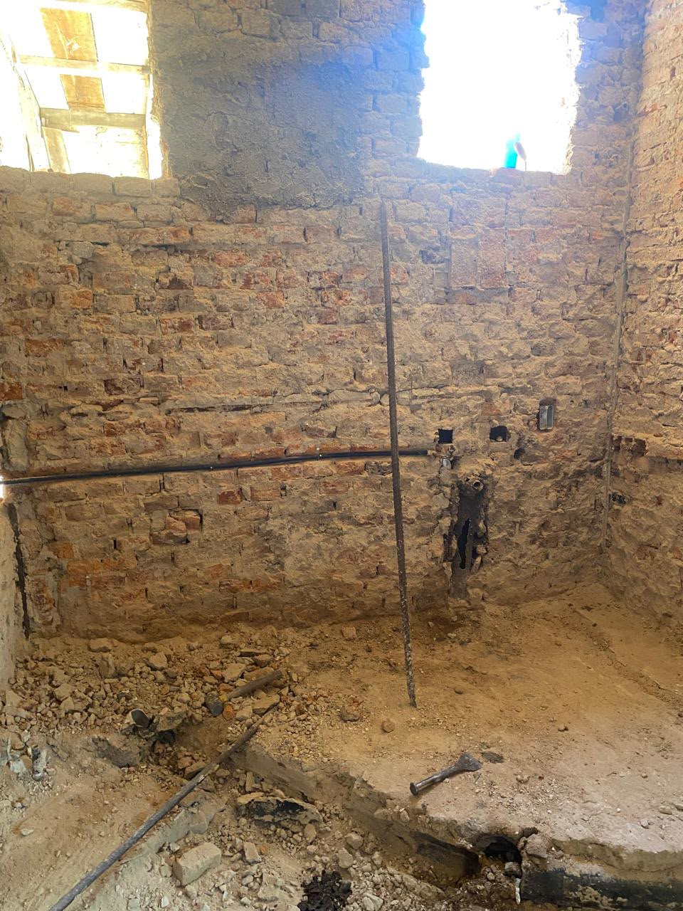
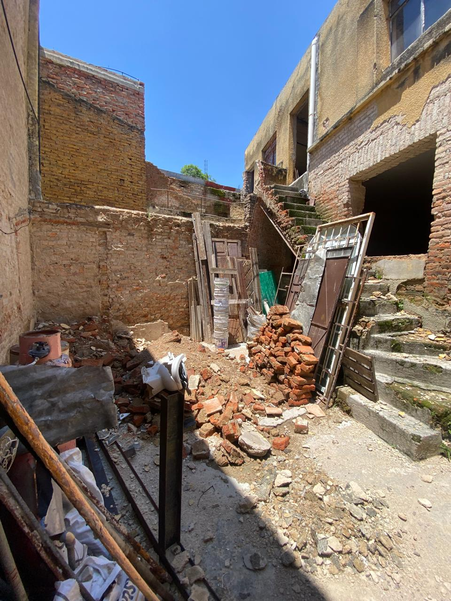

El 20 de julio de 2026, el arquitecto Xavier Iturbide publicó en El Informador un artículo sobre el Art Déco tapatío. Entre los edificios que fotografió estaba el nuestro: Calle Prosperidad 214, en La Perla. La leyenda del pie de foto dice: "La composición geométrica atrapa la mirada del paseante."
Lo que el artículo no cuenta es lo que había que hacer para llegar ahí.
Xavier Iturbide, arquitecto y autor del proyecto Revisiones GDL, documentó el edificio en su columna de El Informador del 20 de julio de 2026 como parte de su análisis del Art Déco en Guadalajara.
Lo que encontramos
Cuando llegamos a Prosperidad 214, la casa llevaba años abandonada. Las escaleras estaban colapsadas. El tabique de adobe expuesto, sin repello, sin cubierta. Los pisos: tierra. Las instalaciones — plomería, electricidad — arrancadas o podridas. Un trozo de puerta de madera apoyada contra la pared que ya no existía.
Por fuera, la fachada de azulejos geométricos seguía en pie. Eso fue lo que nos detuvo.


La restauración
El trabajo lo hizo la arquitecta Claudia Paredes. Intervención desde cero: estructura, instalaciones, pisos, muros, cubierta. La fachada original de azulejos se conservó. Los balcones de herrería de los años 30 también.
El resultado son cuatro estudios — los llamamos Colibrí, Canario, Gorrión y Cacatúas, que es por lo que el edificio terminó llamándose La Casa de los Pájaros. Cada uno tiene baño privado, cocineta equipada y WiFi. El patio interior, que era escombro, hoy es el espacio común donde los inquilinos tienden ropa, hacen café o simplemente están.
"La fachada de azulejos geométricos atrapa la mirada del paseante."
— Xavier Iturbide, Revisiones GDL · El Informador, 20 de julio de 2026
Para quién es
Los estudios están pensados para estancias de 3 a 6 meses. El perfil de quien llega: estudiantes de posgrado, médicos en rotación, profesionistas en asignación temporal en Guadalajara. Personas que necesitan un lugar digno, equipado y sin complicaciones, sin comprometerse con un contrato de un año ni armar una casa desde cero.
La Perla es una colonia tranquila. Hay camiones a las principales universidades, al IMSS, al Hospital Civil y al centro. No es turística. Es el tipo de colonia donde la gente vive de verdad.
Estudios disponibles en La Casa de los Pájaros
Desde $4,500 MXN/mes. Estancias de 3 a 6 meses. Contacto directo con los propietarios — sin intermediarios.
On July 20, 2026, architect Xavier Iturbide published a piece in El Informador about Art Déco architecture in Guadalajara. Among the buildings he photographed was ours: Calle Prosperidad 214, in La Perla. His caption read: "The geometric composition catches the eye of passersby."
What the article doesn't tell is what it took to get there.
Xavier Iturbide, architect and author of the Revisiones GDL project, documented the building in his El Informador column on July 20, 2026, as part of his analysis of Art Déco architecture in Guadalajara.
What we found
When we arrived at Prosperidad 214, the house had been abandoned for years. The staircase had collapsed. The adobe brick walls were bare — no plaster, no roof. The floors were dirt. Plumbing and electrical had been stripped or rotted out. A piece of a wooden door leaned against a wall that no longer existed.
The geometric tile façade out front was still standing. That's what stopped us.
The restoration
Architect Claudia Paredes led the work. Full intervention: structure, utilities, floors, walls, roof. The original tile façade was preserved. The 1930s wrought-iron balconies too.
The result is four studios. We named them Colibrí, Canario, Gorrión, and Cacatúas — which is why the building ended up being called La Casa de los Pájaros (The House of Birds). Each has a private bathroom, a equipped kitchenette, and WiFi. The inner courtyard — which was rubble — is now a shared space where tenants hang laundry, make coffee, or just sit.
"The geometric composition catches the eye of passersby."
— Xavier Iturbide, Revisiones GDL · El Informador, July 20, 2026
Who it's for
The studios are designed for stays of 3 to 6 months. The typical tenant: graduate students, residents and medical fellows on rotation, professionals on temporary assignment in Guadalajara. People who need a decent, move-in-ready space without a year-long lease or the hassle of furnishing a place from scratch.
La Perla is a quiet neighborhood. There are bus lines to the major universities, the IMSS, the Hospital Civil, and downtown. There's nothing tourist about it. It's the kind of colonia where people actually live.
Studios available at La Casa de los Pájaros
From $4,500 MXN/month. Stays of 3 to 6 months. Direct from the owners — no intermediaries.